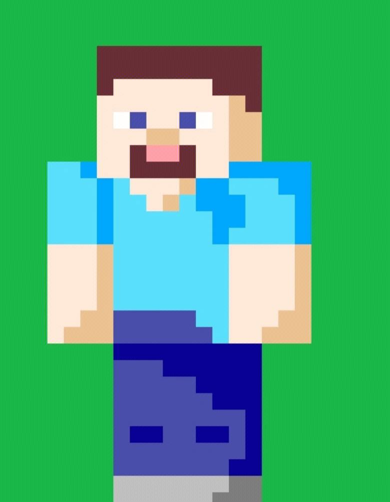
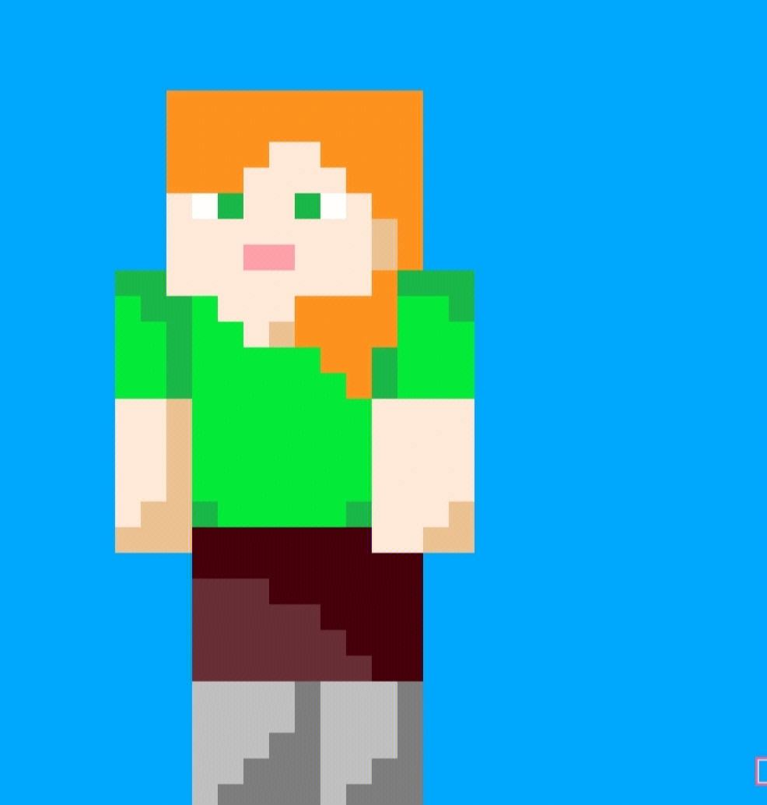
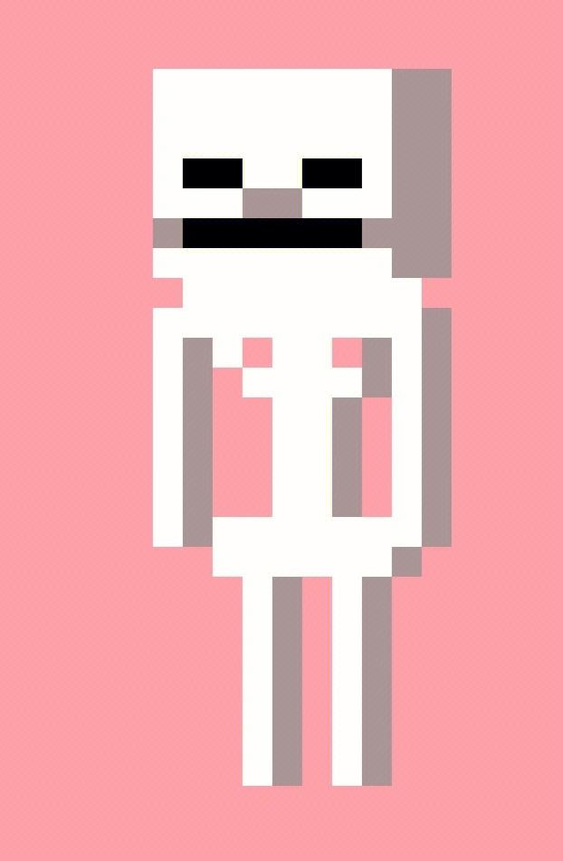
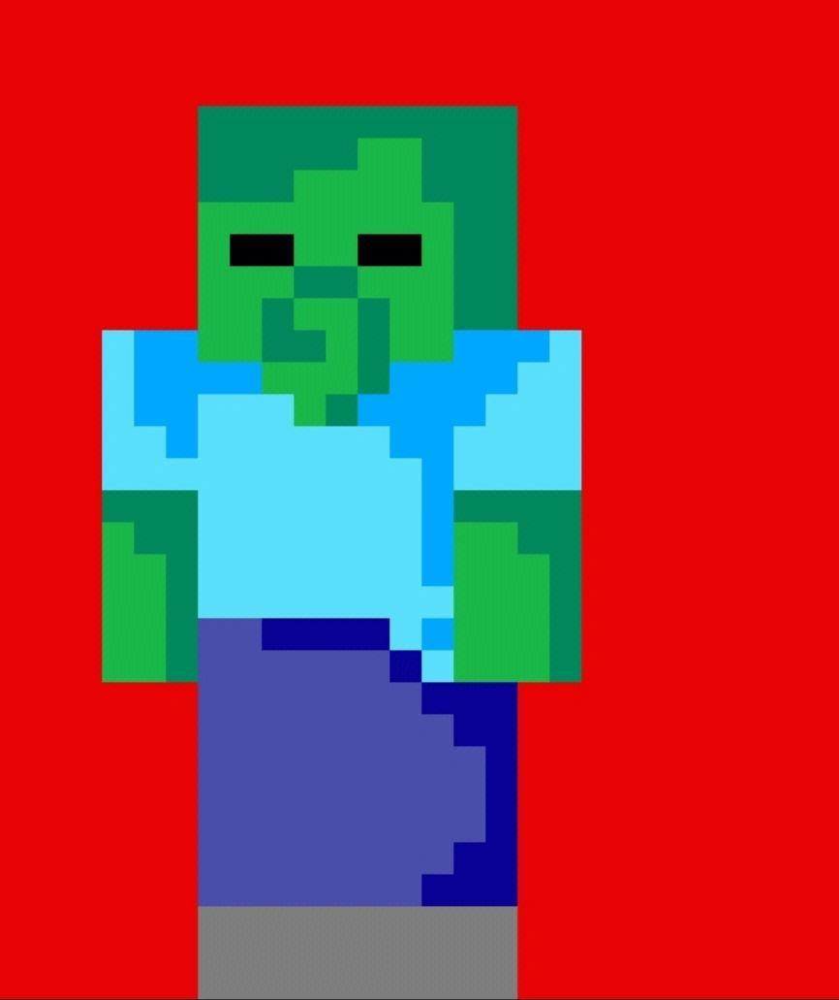
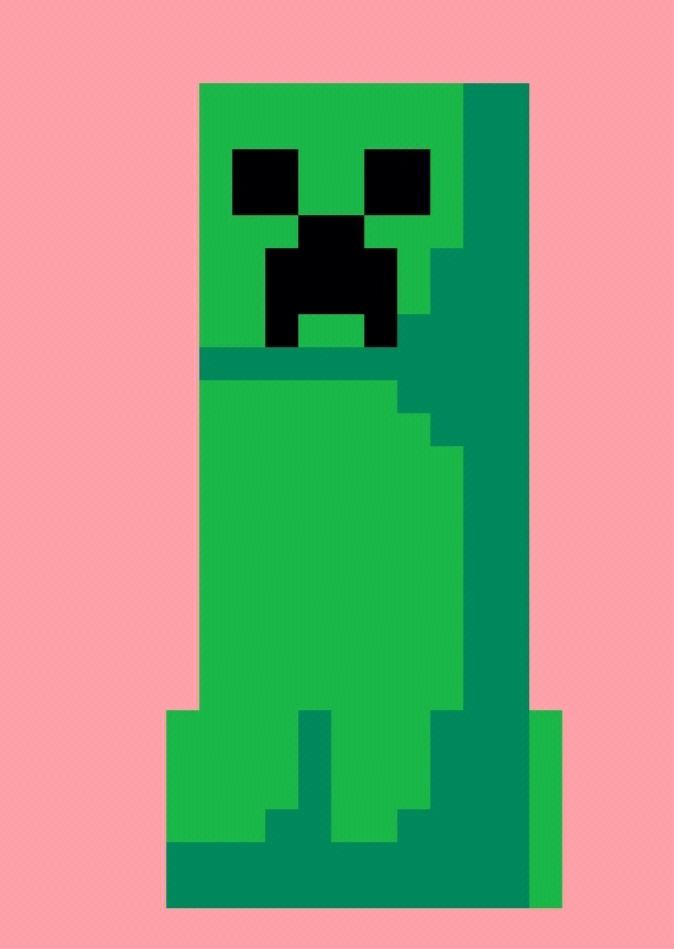

史蒂夫 (外文名Steve)
史蒂夫（Steve）性别：男,生日：2009年5月17日[2] 年龄：约11岁（自发行日起算）,身高：1.85 m,体重：329.38 kg是沙盒类游戏《我的世界》中的主角，玩家的默认皮肤之一，是游戏中的角色。
爱丽克丝 (外文名Alex)
Steve拥有深棕色头发，晒黑的褐色皮肤，紫色的眼睛，身穿青蓝色的衬衫，一条紫蓝色牛仔裤以及灰黑色的鞋子。他还拥有2px至4px大小的胳膊。Steve似乎拥有轻微的浅棕色胡子茬，或者拥有一张嘴，这取决于你怎样看他。[1]


骷髅 (小白)
骷髅（小白）是沙盒游戏《我的世界》（MC）比较常见的野怪，形象是一个没有血肉的白色骷髅，所以被玩家们称为小白，它的攻击方式是使用弓箭射击，经常在黑暗出偷袭玩家。它的血量和防御没有僵尸高，很容易击杀（前提是能近身攻击或者射击准头高）。 [1]
僵尸(Zombie)
是Minecraft中一种常见的攻击型亡灵生物，通常生成在亮度等级小于7的可刷怪方块上，当玩家或者村民进入它们的攻击范围时，它们就会向玩家或村民前进并抬起手试图接触以进行攻击。 [1]


苦力怕 (Creeper)
是游戏《我的世界》（《Minecraft》）当中一种十分常见的敌对生物。它是接近玩家后会自爆的攻击型生物，同时也是《Minecraft》的吉祥物与标志。它们是一种绿色的、有着一张沮丧苦脸的表情，会潜伏和自爆并以此伤害玩家及破坏周围环境的怪物，没有脚步声，也可以被玩家点燃后爆炸。与僵尸及骷髅不一样的是，因为不是亡灵生物，它们暴露在阳光下时不会着火。[1]